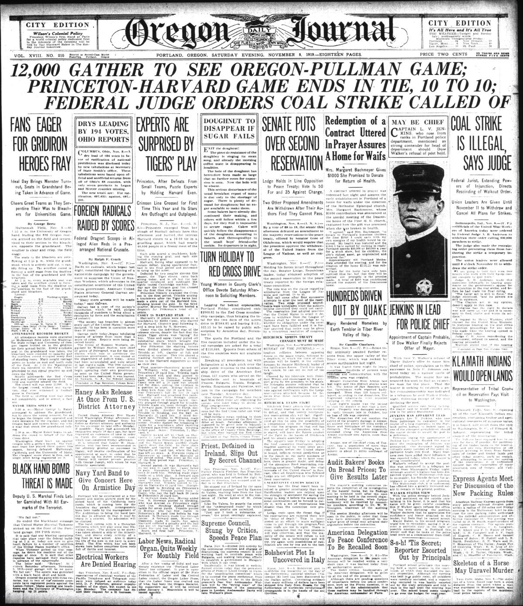
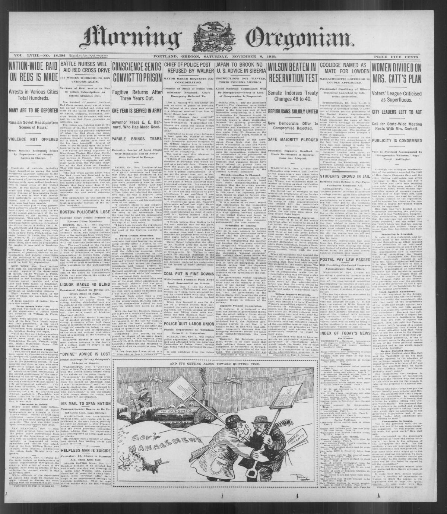
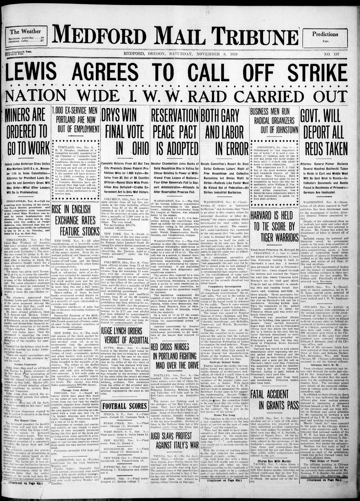
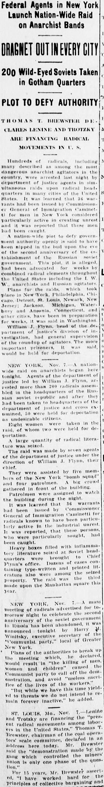
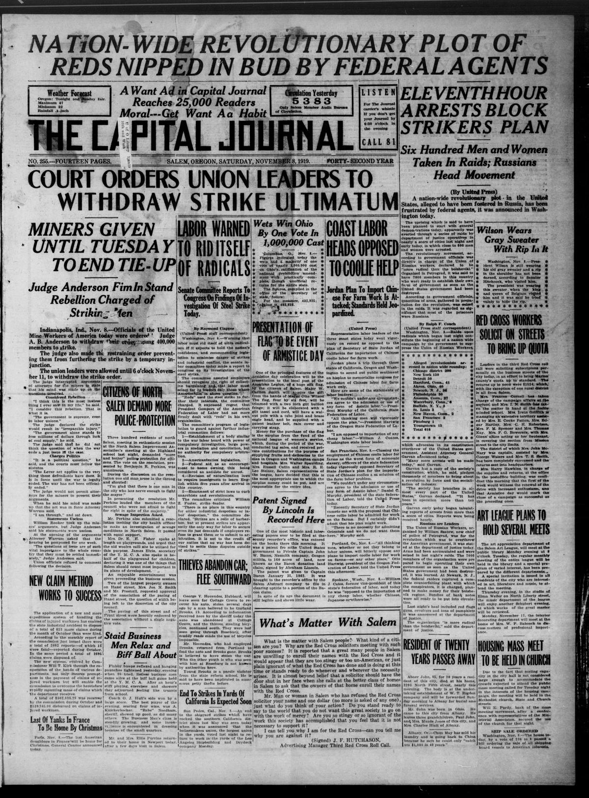

HN HN-418 · November 8, 1919 · Politics, Government & Diplomacy > Government Investigations & Abuse of Power > Political repression, raids and emergency-state powers
Source: Indianapolis News, p. 1 — original page.
Report: The article relayed Attorney General A. Mitchell Palmer's announcement that more than 200 people were held following coordinated federal raids in 18 cities. Officials claimed to have seized rifles, flags, pamphlets, and bomb-making materials and sought deportations.
Assessment: Arrest totals, seized items, and official claims of radical conspiracy do not establish each detainee's guilt. These were part of the First Red Scare and Palmer Raids; the article primarily reproduces the prosecuting government's perspective, with civil-liberties and warrant issues requiring further review.
Authentic images retrieved from Historic Oregon Newspapers (University of Oregon) and Library of Congress / Chronicling America. Article crops are located using the archive's own OCR word coordinates and rendered at native crop resolution; article clips are assembled from the archive's own article-block images; page scans are reduced-size access renditions. No images were generated, mocked, or retouched.





Not yet acquired. Queued for provider-specific acquisition testing (see source-acquisition manifest).
URL (preserved verbatim): https://newspapers.library.in.gov/?a=d&d=INN19191108-01.1.1
Saved research report: Historical_Newspaper_Event_Research_403-427_2026-10-23.md
Evidence note: A newspaper report means a historical publication made a claim; it does not establish that claim as fact. Contemporary reporting is separated from later scholarly context and our own assessment.